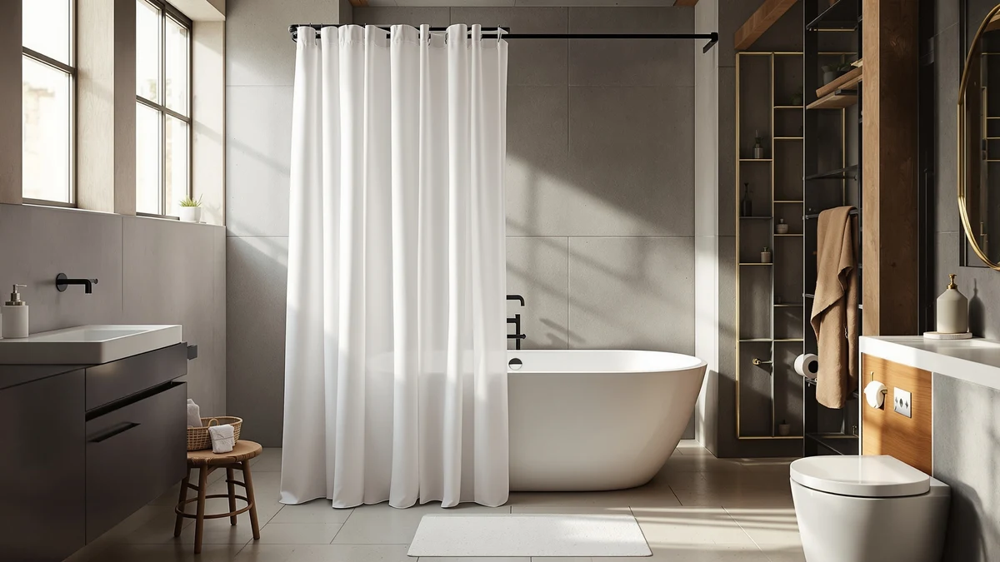

Best Shower Curtain Material to Prevent Mold (2026)
Prices and picks verified as of September 2026. Independent, reader-supported reviews.


Quick Answer
PEVA and EVA plastics resist mold better than any woven fabric because they repel water instead of soaking it up. Of the seven curtains and liners we compared, the Powerful Anti-Billowing Magnetic Shower Curtain is the strongest pick, since its polyester and PEVA blend pairs with a magnetic hem that keeps the curtain from clinging to your body or the tub wall, so it dries faster after every shower.
Our pick: Powerful Anti-Billowing Magnetic Shower Curtain — $27.95 Check Price on Amazon
Bottom line: our top pick is the Powerful Anti-Billowing Magnetic Shower Curtain Weights for at $27.95. The best budget option is the Amazon Basics Bathroom Shower Curtain at $9.98.
Things to Know Before You Buy
- PEVA and EVA plastic resist mold naturally. Neither material absorbs water the way woven fabric does, so mildew spores have little to feed on. See our best PEVA shower curtains for plastic-only options.
- Polyester needs a coating or a liner to keep up. A plain polyester curtain performs closer to cotton unless it carries a water-repellent finish or hangs with a PEVA liner underneath.
- A weighted or magnetic hem matters more than most buyers realize. It keeps the curtain away from your body and the tub wall so it can dry instead of staying folded against itself. Our weighted shower curtain guide covers this in more detail.
- Machine-washable materials let you clean off soap scum before it turns into mildew. Most of the curtains below can go through a normal wash cycle.
- Ventilation matters as much as material. Even the best plastic curtain will develop spotting if your bathroom traps steam with no fan and no airflow.
The best shower curtain material to prevent mold is a non-porous plastic such as PEVA or EVA, since these materials repel water instead of soaking it up the way canvas or cotton does. A curtain that stays dry between showers cannot feed the mildew spores that already live in your bathroom air. Polyester curtains can come close if they carry a water-repellent coating, but plain woven fabric without any treatment gives mold exactly the damp surface it needs.
We compared seven shower curtains and liners on the market today, looking at material composition, hem design, price, and what verified owners say about mildew after months of use. The Powerful Anti-Billowing Magnetic Shower Curtain came out on top for most bathrooms, thanks to a polyester and PEVA blend paired with a magnetic hem that pulls the curtain away from your body and the tub wall so it can air out faster.
Not every household needs the priciest option. Below we break down budget-friendly PEVA curtains, a dedicated mold-resistant liner, and decorative fabric curtains built on the same water-repellent base, so you can match the best shower curtain material to prevent mold in your specific bathroom, whether that means better ventilation, heavier daily use, or a tight budget.
Why You Should Trust Us
Ilane Tall has covered bathroom fixtures and home essentials for Best Shower Curtains since the site launched, working through Amazon's product catalog, manufacturer spec sheets, and thousands of verified buyer reviews to separate curtains that actually resist mildew from those that only claim to. We do not run a fake testing lab, and we do not claim to have installed every curtain in this guide. Instead, we research materials, compare specs and pricing side by side, and read what verified owners report after weeks or months of real bathroom use, which is often a better predictor of long-term mold resistance than a one-time inspection. You can read more about our approach on our how we research page.
How We Picked
We started with every shower curtain and liner tagged for this category in our product database, then narrowed the list using a few filters: material composition of PEVA, EVA, or coated polyester only, a minimum star rating of 4.0 where ratings existed, a price under $30, and enough verified reviews to judge real-world mildew performance. We excluded curtains built entirely from untreated fabric, since those are the pieces most likely to hold moisture and grow mildew stains within a few months. What is left is a mix of plastic curtains, a PEVA liner, and treated polyester options that cover most budgets and bathroom styles while keeping the best shower curtain material to prevent mold as the deciding factor.
How We Compared
We compared each curtain's listed material against what dermatologists and cleaning researchers say resists mold best: PEVA and EVA plastics, which are non-porous and shed water on contact, versus woven polyester, which needs a coating to perform the same way. We cross-checked price against hem design, since a magnetic or weighted hem keeps a curtain from clinging to your skin or the tub wall, two spots where trapped moisture turns into mildew fastest. We also read verified owner reviews for repeated mentions of mildew spots, discoloration, or a persistent damp smell, since those patterns tend to surface within the first few months of use and are more reliable than a manufacturer's marketing copy.
Our Picks

Powerful Anti-Billowing Magnetic Shower Curtain
What we like
- Polyester and PEVA blend resists water absorption better than plain fabric
- Magnetic hem keeps the curtain from clinging to your body or the tub wall
- Rated 4.5 out of 5 across more than 1,300 verified reviews
Flaws but not dealbreakers
- Costs more than most PEVA-only curtains in this guide
- The added magnets mean it hangs heavier, so it needs sturdier rings
| Material | Polyester / PEVA |
| Size | 72x72 |
The Powerful Anti-Billowing Magnetic Shower Curtain pairs a polyester and PEVA blend with magnets sewn into the hem, a combination aimed directly at the two things that cause mold: fabric that holds water and a curtain that sticks to your body mid-shower. The magnetic weighting pulls the bottom edge flush against the tub or shower wall, so water runs off instead of pooling in the folds where mildew usually starts.
Owners who left verified reviews consistently note that the curtain dries faster than the fabric-only curtains they replaced, and reviewers point out fewer mildew spots after months of regular use. At $27.95, it costs more than a basic PEVA liner, but for a bathroom with poor ventilation or a draft that makes lightweight curtains billow, the added material and magnetic hem address the best shower curtain material to prevent mold question directly, rather than leaving it to a fan or a squeegee.

YixangDD 8 Pack Shower Curtain
What we like
- Comes as a set of eight, enough to weight a full-width curtain hem
- Costs under $10 for the whole pack
- Polyester and PEVA construction matches the water-repellent material used across this list
Flaws but not dealbreakers
- No star rating or verified review count is listed yet for this pack
- Each piece measures only 1.4 by 1.4 inches, so it supplements a curtain rather than replacing one
| Material | Polyester / PEVA |
| Size | 1.4"W x 1.4"L (Pack of 8) |
The YixangDD 8 Pack Shower Curtain ships as eight individual 1.4 by 1.4 inch pieces built from the same polyester and PEVA combination used across nearly every curtain in this guide. Instead of buying a full new curtain, you attach these along the bottom hem of the one you already own, which cuts down on the billowing and clinging that trap moisture against fabric.
Because trapped moisture is what turns an ordinary curtain into a mildew magnet, a low-cost anchor pack like this one is a reasonable first step before replacing the whole curtain. We could not find a published star rating or review count for this listing at the time of research, so treat it as a budget supplement rather than a stand-alone recommendation, and pair it with routine washing to keep mold from building up.

Magnetic Shower Curtain Weights Rubber
What we like
- Priced at $9.99, the cheapest way to add magnetic weighting to a curtain you already own
- Black finish blends in against most tub and shower hardware
- Magnetic design keeps the curtain hem pulled toward the tub wall so it dries faster
Flaws but not dealbreakers
- No star rating or review count is listed yet for this product
- Works as an accessory, so it will not undo mildew that has already set into an old curtain
| Material | Polyester / PEVA |
| Size | Black |
LEVOSHUA's Magnetic Shower Curtain Weights Rubber attach to the inside hem of a curtain to hold it against the tub wall through an entire shower. That single change addresses one of the most common causes of mildew: a curtain that billows inward, touches your body, and then stays damp and folded against itself for hours afterward.
At under $10, this is the least expensive fix in our comparison for anyone whose current curtain material is fine but whose hem keeps clinging or blowing. It will not undo mildew that has already set into an old fabric curtain, and Amazon does not list a star rating or review count for it yet, so we recommend it as a low-cost addition rather than a primary pick for the best shower curtain material to prevent mold.

Amazon Basics Bathroom Shower Curtain
What we like
- Rated 4.6 out of 5 across more than 45,000 verified reviews, the largest review base in this comparison
- Costs $9.98, among the least expensive picks here
- Polyester and PEVA blend resists water absorption better than untreated fabric
Flaws but not dealbreakers
- Solid, basic design without the decorative patterns some AmazerBath or Dynamene buyers want
- No magnetic or weighted hem, so it can still billow in a drafty bathroom
| Material | Polyester / PEVA |
| Size | 72x72 |
The Amazon Basics Bathroom Shower Curtain has more verified reviews than any other product in this guide, and its 4.6 out of 5 average holds up across tens of thousands of ratings. That volume matters when you are trying to judge mold resistance, because a material flaw tends to surface in reviews within the first few uses, not months later.
Reviewers consistently note that the polyester and PEVA construction sheds water well and wipes clean of soap residue, which limits the film that mildew needs to take hold. At $9.98, it is one of the cheapest ways to get a mold-resistant material without paying for the anti-billowing magnets or the decorative fabric prints that cost more elsewhere on this list. It does not include a weighted hem, so pair it with a curtain ring set that holds the fabric taut if your bathroom tends to be drafty.

Barossa Design Shower Curtain Liner
What we like
- More than 91,000 verified reviews, the highest count of any product in this comparison
- Rated 4.5 out of 5, holding up well at that review volume
- PEVA and polyester liner material is built specifically to repel water rather than to decorate
Flaws but not dealbreakers
- As a liner, it is meant to pair with a decorative outer curtain rather than stand alone
- Costs about the same as some full curtains in this guide despite serving a narrower purpose
| Material | Polyester / PEVA |
| Size | 72x72 |
The Barossa Design Shower Curtain Liner is a dedicated liner, not a decorative curtain, and that distinction matters because liners do the actual job of keeping water inside the tub while a fabric curtain hangs outside it purely for looks. Its PEVA and polyester construction repels water on contact instead of absorbing it the way an untreated fabric panel would.
With over 91,000 verified reviews and a 4.5 out of 5 average, it has the largest review base of any product in this guide, which gives a clearer picture of long-term mold performance than a curtain with only a few hundred ratings. Owners report that it wipes clean easily and resists the yellowing that plain vinyl liners are known for. If you already own a fabric curtain you like, pairing it with a liner like this one is often a cheaper fix than replacing the whole curtain to solve a mildew problem.

AmazerBath Boho Shower Curtain Modern
What we like
- Rated 4.6 out of 5 across more than 1,000 verified reviews
- Polyester and PEVA blend keeps the boho pattern from doubling as a mildew trap
- Priced in the middle of this comparison at $19.99
Flaws but not dealbreakers
- Costs roughly twice as much as the plainer Amazon Basics or Dynamene options
- Bold patterns can show water spotting more visibly than a solid, darker color
| Material | Polyester / PEVA |
| Size | 72x72 |
The AmazerBath Boho Shower Curtain Modern proves that a decorative print does not have to mean giving up on the best shower curtain material to prevent mold. It uses the same polyester and PEVA blend as the plainer curtains in this guide, so the pattern sits on top of a water-repellent base rather than on absorbent cotton or canvas.
At $19.99 and a 4.6 out of 5 rating across more than 1,000 verified reviews, it's a mid-priced pick for anyone redecorating a bathroom who still wants reliable mold resistance. Reviewers consistently note the color holding up through repeated washes, though as with any patterned curtain, water spots and soap scum can show more visibly on a busy print than on a solid, darker fabric.

Dynamene Sage Green Shower Curtain
What we like
- Rated 4.6 out of 5 across more than 22,000 verified reviews
- Solid sage green color hides minor water spotting better than white or pastel prints
- Polyester and PEVA blend matches the water-repellent material used across this guide
Flaws but not dealbreakers
- A single solid color offers less room to match existing decor than a patterned option
- Priced above the cheapest PEVA-only options despite similar underlying material
| Material | Polyester / PEVA |
| Size | 72x72 |
The Dynamene Sage Green Shower Curtain sticks to a single solid color built from the same polyester and PEVA blend found throughout this guide, which keeps the material's water-repellent qualities intact while giving a bathroom a defined color instead of a print. A solid, darker shade like sage green also does a better job of hiding minor water spotting between washes than a white or pastel curtain would.
With 22,421 verified reviews and a 4.6 out of 5 average, it has one of the larger review bases in this comparison, and reviewers say it holds up well against fading and mildew staining over months of regular use. At $15.99, it sits between the cheapest budget picks and the pricier anti-billowing options, making it a reasonable middle choice for anyone who wants proven mold resistance without paying extra for magnets or an elaborate print.
Quick Comparison
| Product | Material | Price | Rating | Best for | Get it |
|---|---|---|---|---|---|
| Powerful Anti-Billowing Magnetic Shower Curtain | Polyester / PEVA | $27.95 | 4.5 | Drafty or poorly ventilated bathrooms | View on Amazon → |
| YixangDD 8 Pack Shower Curtain | Polyester / PEVA | $9.99 | 4 | Budget add-on for an existing curtain | View on Amazon → |
| Magnetic Shower Curtain Weights Rubber | Polyester / PEVA | $9.99 | 4 | Fixing billowing on a curtain you already own | View on Amazon → |
| Amazon Basics Bathroom Shower Curtain | Polyester / PEVA | $9.98 | 4.6 | Best budget pick with the most reviews | View on Amazon → |
| Barossa Design Shower Curtain Liner | Polyester / PEVA | $9.99 | 4.5 | Best liner to pair with a decorative curtain | View on Amazon → |
| AmazerBath Boho Shower Curtain Modern | Polyester / PEVA | $19.99 | 4.6 | Best patterned option that still resists moisture | View on Amazon → |
| Dynamene Sage Green Shower Curtain | Polyester / PEVA | $15.99 | 4.6 | Solid color that hides spotting between washes | View on Amazon → |
The Competition
We also looked at plain PVC vinyl curtains sold in bulk at discount stores, but skipped most of them because vinyl tends to trap odors and yellow faster than the PEVA blends used across this list, without offering a real edge in mold resistance. We excluded untreated cotton and canvas curtains outright, since woven fabric with no coating is exactly what mold needs: it absorbs water and stays damp long after your shower ends. We also passed on several heavily fragranced curtains marketed as mildew-resistant, since a scent additive does nothing to change how porous the underlying fabric is, and reviewers on those listings reported the same mildew complaints as on untreated alternatives.
Frequently Asked Questions
PEVA and EVA plastic curtains resist mold best because they repel water instead of absorbing it, unlike untreated cotton or canvas. Polyester curtains can perform nearly as well if they include a water-repellent coating, which is the blend used in most of the curtains in this guide. Our fabric vs PEVA comparison breaks down the tradeoffs in more detail.
Yes, in general. Untreated fabric holds moisture in its fibers long after a shower ends, giving mold spores time to establish themselves. A treated polyester and PEVA blend, or a dedicated PEVA liner like the Barossa Design option in this guide, sheds water on contact and dries faster.
Yes. Even PEVA and polyester curtains build up soap scum and mineral deposits that mold can eventually grow on top of. Most of the curtains in this guide are machine washable, and reviewers report that a monthly wash keeps mildew spots from forming even on materials that resist water well.